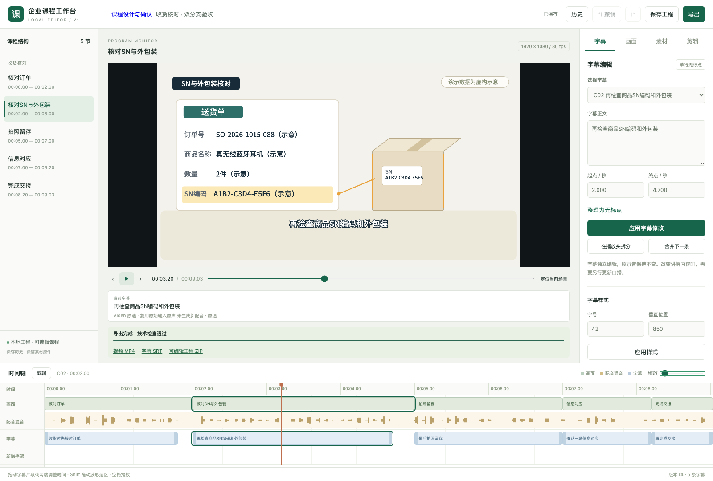
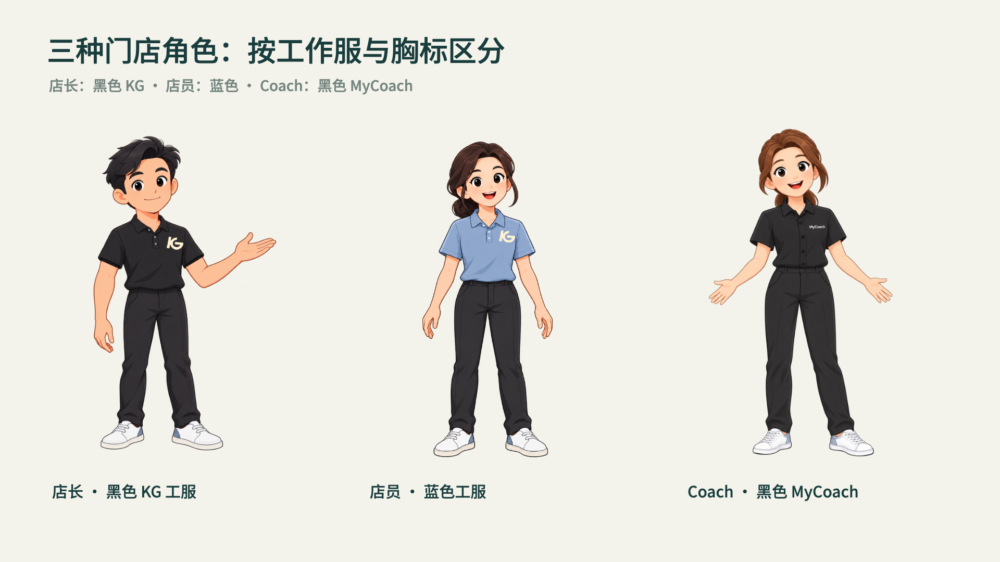
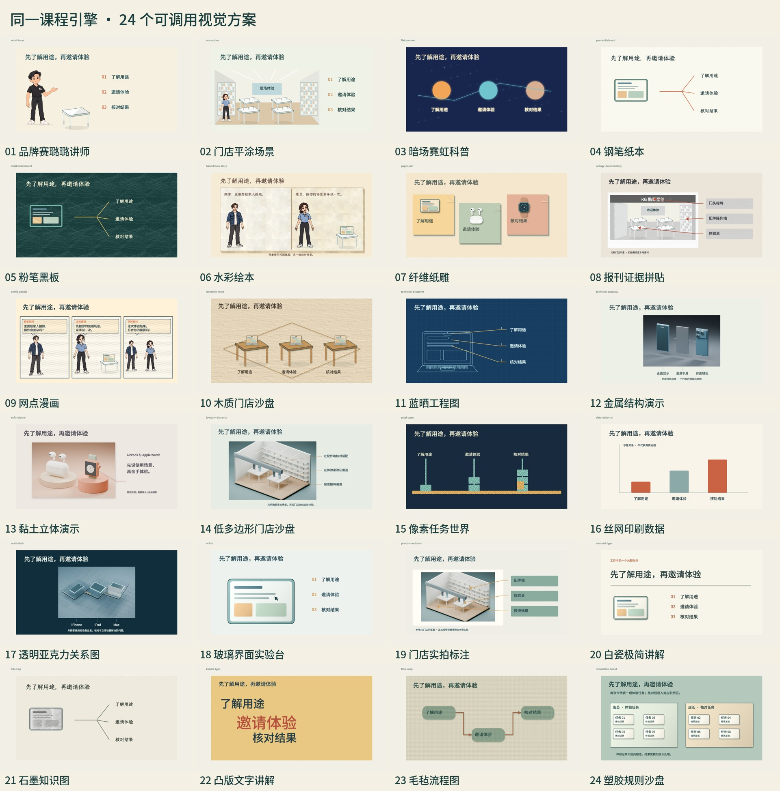

历史视频演示 · ARCHIVE
历史宣传片（v6.9.8 · 42 秒）
保留 6.9.8 版耳机售后案例（含此前 DSH 七阶段界面演示）；切换参数 ?showreel=64 可回看 64 秒鼓点版。
v6.9.8 历史归档视频下载归档 MP4
v6.9.8 归档
64 秒动效鼓点版
按规则、操作与判断展示早期动效分组。
在本页切换播放v6.1.0 归档
73 秒花字与原库音效样片
早期《回收价格异议处理》花字与原库音效展示。
查看归档样片页面v5.0.0 归档
80 秒混剪 & 17 支独立样片
早期 17 支独立静默样片与 100 种离线图谱。
查看 17 支列表历史界面与静态人物截图


